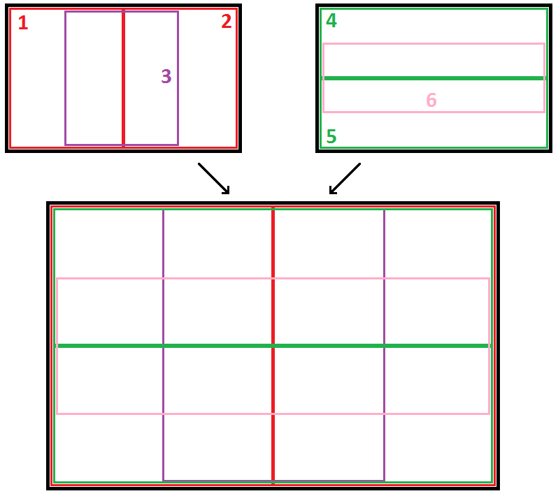
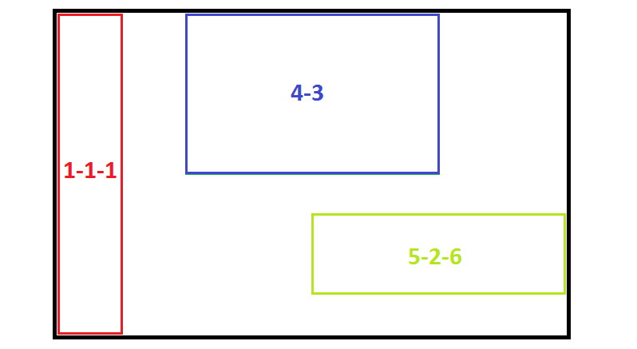
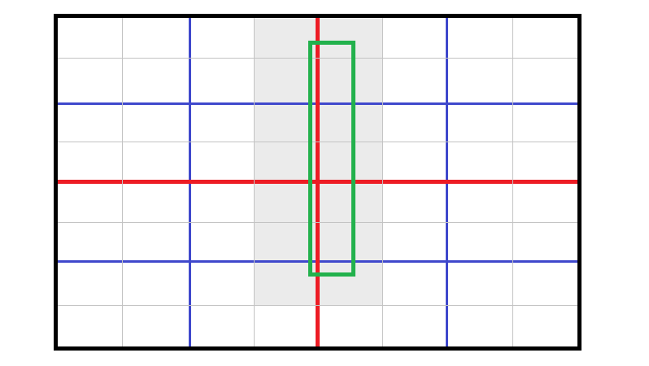
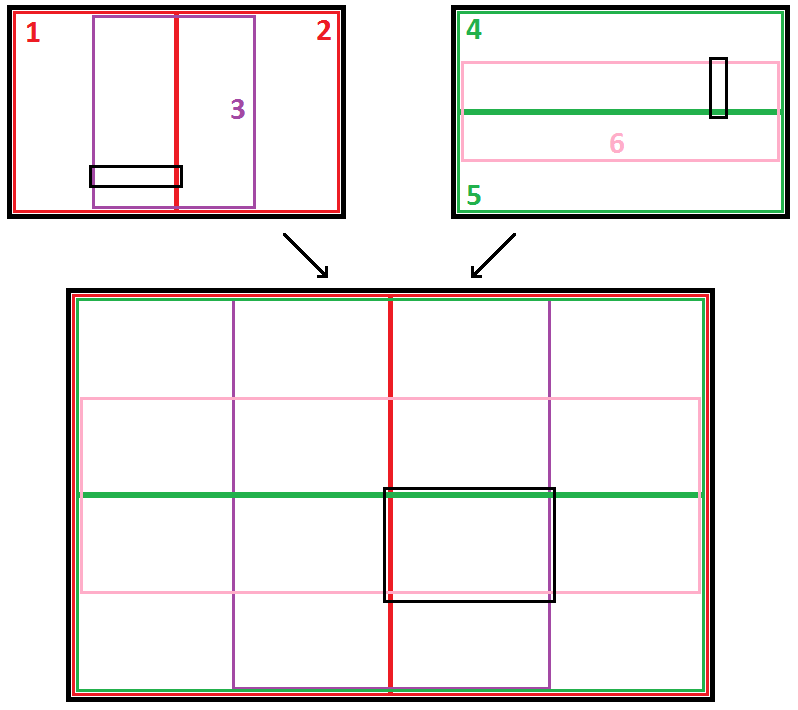
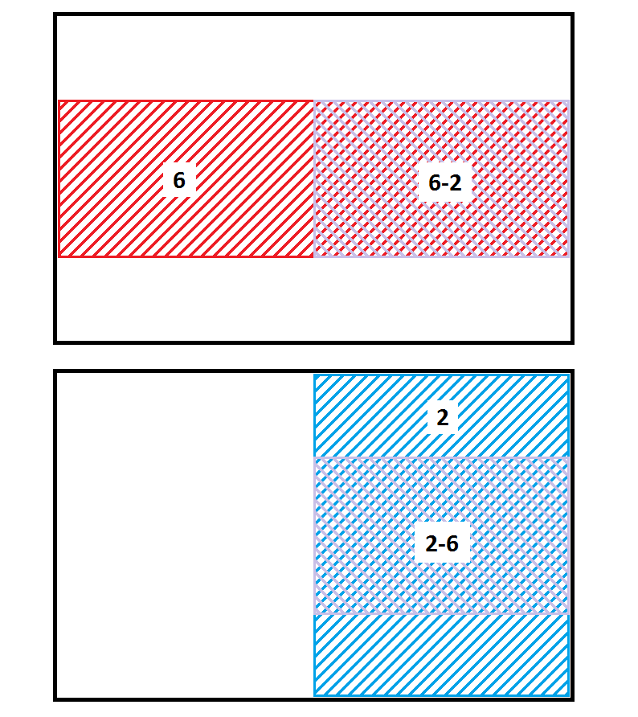

Efficient 2D Bounded Point Search
An efficient solution is presented to the following problem: given N points in a 2D plane, each with an associated unique rank 0 -> N-1, find the k points with the lowest rank in a given rectangle. The solution is valid for any N and k and any point distribution, but is most effective when k << N and the points are uniformly distributed in x and y.
Motivation
This problem was posed by Churchill Navigation as a programming challenge. For the challenge, N was 10 million, k was 20, and the points and rectangles were generated randomly. Although not stated in the problem, the points were also constrained to fall within a rectangle and were somewhat uniformly distributed. An example point cloud is shown below.
Solutions were judged on correctness and execution speed only, although the memory usage was required to be below 512MB and the initialization time for any data structures had to be under 30s on the test hardware. My solution came in 2nd place, narrowly beaten at the last minute. With proper use of the structure of arrays pattern and SSE intrinsics (as demonstrated by Stefan's solution to the same problem), I'm convinced that the implementaion could be sped up further.
Solution
Conceptually, my solution can be divided into three parts: a spacial division tree search, which may fail to find the top k points with some small probability, followed by two possible backup solutions in case the primary search does fail. The choice of backup solution depends on the properties of the query rectangle.
Spacial Division
The primary data structure employed was a spacial division tree with overlapping child nodes. At each level, the space is divided into six regions, as shown in the diagram below. For each node in the tree (internal nodes as well as leaves), I precalculate the T points with lowest rank, and sort these points by rank.
When a rectangle is queried, I descend the tree to find the smallest node (or leaf) that fully contains the query rectangle. I then check the T precalculated points in this rectangle to find the top k that fall inside. If I fail to find k points that fall insisde the rectangle, I fall back onto one of the backup algorithms (more on this below).
There are several advantages to this division structure
-

The nodes and leaves have widely varying shapes. Following the notation
a-b-c, whereais a child, andbis a child ofa, andcis a child ofb, we can see that node4-3is a roughly equal sided rectange, whereas node1-1-1is a tall skinny rectangle, and node5-2-6is a short fat rectangle. This means that for almost any query rectange, there is a node of roughly the same shape. This is imporant, because the larger the query rectangle is as a fraction of the node size, the more likely that the algorithm will be able to findkpoints (out ofT) that fall within it. -

It accommodates query rectangles that are pathological to a quadtree. A quadtree (or any spacial division structure without overlap) exhibits poor performance for rectangles that overlap multiple children, because either you have to a) stop recursing and check the points in the parent node or b) merge the results of the children. Option a) is likely to fail if the query rectangle is only a small fraction of the size of the parent (unless
Tis very large) and option b) requires recursive merging, which becomes expensive quickly. For example, in the image to the right, the green query rectangle overlaps 14 leaf nodes, whereas in the overlapping tree structure, it would fall comfortably inside node3-3and would be a significant fraction of that node's area. -

It has provable, consistent behavior in the internal nodes. Recursion halts only at a leaf node, or if the none of the children of the current node fully contain the query rectangle. It is easy to see that this latter case only occurs if both of the following are true: the query rectangle width is greater than 1/4th the node width and the query rectangle height is greater than 1/4th the node height (the diagram to the right shows the smallest possible query rectangle that does not fall inside a child node). This implies that recursion only stops at an internal node when the query rectangle is at least 1/16th the area of the node. Assuming a roughly uniform distribution of points, the probability of a point falling within the query rectangle is equal to the ratio of the query rectangle to the ratio of the node rectangle, which we just proved is lower bounded by 1/16. The probability of finding at least
kpoints (out ofT) that fall inside the rectangle is given by the binomial distribution, and, for largeT, is very good. For example, for the target problem withk = 20, choosingT = 500implies a failure rate of less than 1%. -

It is relatively memory efficient. The number of nodes in a quadtree grows as the fourth power of the depth. Since the overlapping tree structure has six divisions per node, one might expect that the number of nodes would grow as the sixth power of the depth. However, due to the nature of the overlap, many nodes can be reached by more than one path down the tree. For example, the figure at the right shows that the node
6-2represents the same region as node2-6. Thus, only one of those areas needs to be built out, and the other can simply point to the existing one.
The primary downside to the overlapping tree structure is that, despite the memory efficiency described, it cannot be divided down to leaves as small as a non-overlapping structure could achieve, given the memory limits. In my implementation, I was able to reach a depth of around 9. Since each level halves the area of the previous, this still meant that each leaf contained, on average, tens of thousands of points. Because of this, the tree often failed to find at least k points for very small rectangles. In these cases (and in the rare cases when internal nodes failed), the algorithm falls back on a slower, guaranteed solution.
Backup 1: Linear Search
The first backup solution is a linear search. As part of the initialization process, the algorithm copies and presorts all points into two lists, one sorted by x-coordinate and the other sorted by y-coordinate. If the tree search fails and linear search is chosen as the backup, the algorithm performs a binary search on both lists based on the query rectangle bounds to find all candidate points whose x-coordinate or y-coordinate falls within the x or y range of the query rectangle. In other words, if Lx is the list of points sorted by x coordinate and Ly is the list of points sorted by y coordinate, and [xmin, xmax, ymin, ymax] is the query rectangle, the algorithm find xli, xhi, yli, yhi such that Lx[xli:xhi] are all the points whose x coordinate falls within the query rectangle and Ly[yli:yhi] are all the points whose y coordinate falls within the query rectangle. The list with the smaller number of candidate points is then linearly searched, and the top k points are returned.
Backup 2: Block Search
Also as part of the initialization process, another copy of the points is created and the points are "binned" into a B-by-B grid of blocks. Each bin's list of points is then sorted by rank. If the tree search fails and block search is chosen as the backup, the algorithm determines the set of blocks that the query rectangle overlaps, and the k points with lowest rank from these blocks are returned.
Choice of Backup Solution
Ideally, we would like to choose the backup solution that requires the fewest point checks. While we know how many checks are required in the case of linear search - the smaller of xhi-xli and yhi-yli - we do not know how many point checks will be required to find the top k points in block search. We do know that the maximum number of checks is the sum of the number of points in all blocks. Ultimately, I experimented with several different conditions for choosing between the backup method. The final condition chosen was to use linear search if the total number of linear checks was less than some constant L or was less than the maximum number of block checks multiplied by some constant m.
Code
The code can be found on Github. The relevant files are
| File | Purpose |
|---|---|
gumption.c | All algorithm code and utility methods |
gumption.h | Defines the relevant data structures |
point_search.h | DLL header definition and Point definition provided by Churchill |
qsort.h | Implements qsort as a macro, which avoids the inefficiency of having to call the comparison function |
buildgumption.sh | Script for building the DLL from the sources |
Note that this is not the actual winning code submitted to Churchill for the challenge, but a cleaned up version of the algorithm. Churchill also informed me that the algorithm returns incorrect results in some cases, so there is still a lingering bug.
License
This project is licenced under an MIT license.
Copyright (c) 2015 Jordan Crittenden
Permission is hereby granted, free of charge, to any person obtaining a copy of this software and associated documentation files (the "Software"), to deal in the Software without restriction, including without limitation the rights to use, copy, modify, merge, publish, distribute, sublicense, and/or sell copies of the Software, and to permit persons to whom the Software is furnished to do so, subject to the following conditions:
The above copyright notice and this permission notice shall be included in all copies or substantial portions of the Software.
THE SOFTWARE IS PROVIDED "AS IS", WITHOUT WARRANTY OF ANY KIND, EXPRESS OR IMPLIED, INCLUDING BUT NOT LIMITED TO THE WARRANTIES OF MERCHANTABILITY, FITNESS FOR A PARTICULAR PURPOSE AND NONINFRINGEMENT. IN NO EVENT SHALL THE AUTHORS OR COPYRIGHT HOLDERS BE LIABLE FOR ANY CLAIM, DAMAGES OR OTHER LIABILITY, WHETHER IN AN ACTION OF CONTRACT, TORT OR OTHERWISE, ARISING FROM, OUT OF OR IN CONNECTION WITH THE SOFTWARE OR THE USE OR OTHER DEALINGS IN THE SOFTWARE.